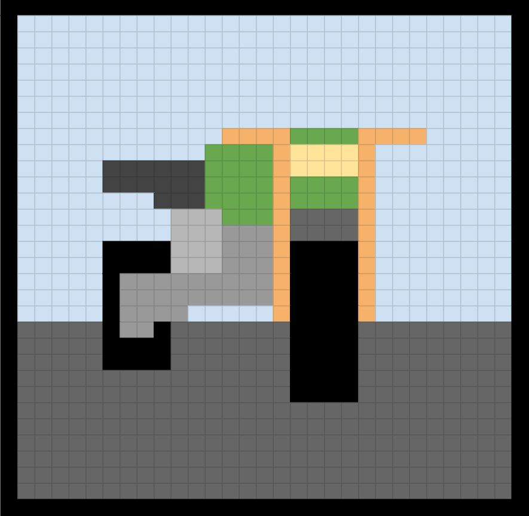

Today I learned to add a favicon to my website. I did this by first adding the screenshot to the assignment. I then added link rel="icon" type="img/png" and then href with the name of my png that contains my favicon. Doing this I was able to add my favicon to the web page
Here is what my favicon looks like bigger
